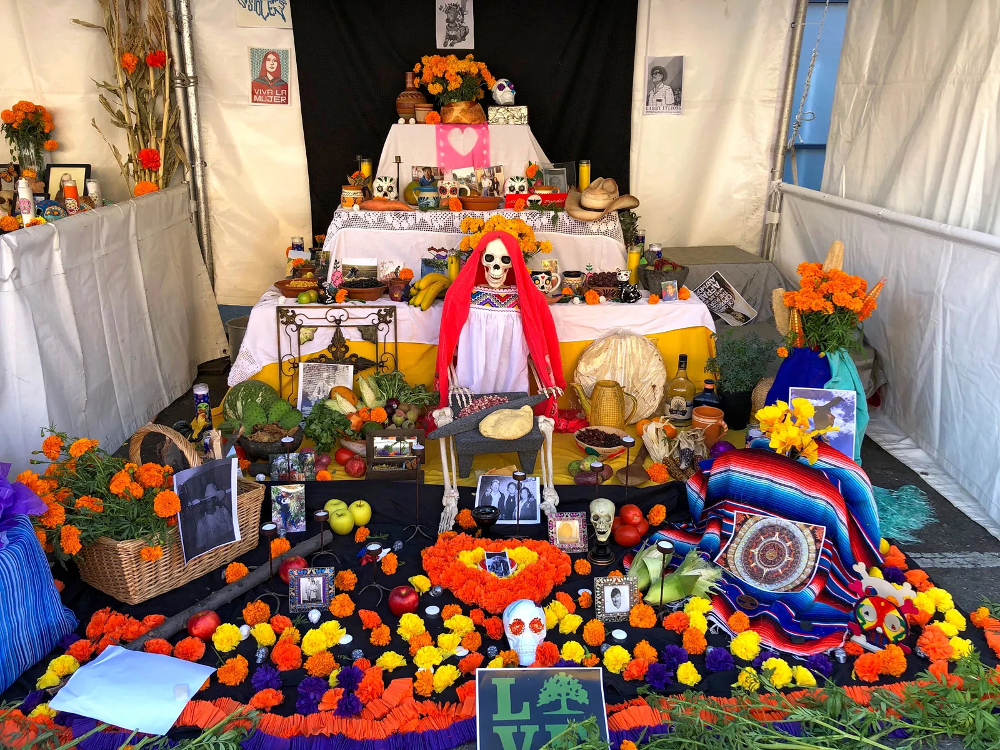

The Anatomy of an Ofrenda
An ofrenda (home altar) is built to invite returning spirits back to the earthly realm. Altars are decorated with photographs, personal mementos, and symbolic offerings representing earth, wind, water, and fire.
Essential Altar Offerings
- Cempasúchil (Marigolds): Vibrant orange flowers guiding spirits home.
- Pan de Muerto: A sweet, spiced bread baked with dough shapes.
- Papel Picado: Delicately cut tissue paper banners representing wind.
- Calaveras de Azúcar: Decorative sugar skulls with names of the departed.
- Water and Salt: Purifying element and quenching thirst.
Community Traditions
